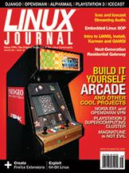

Shutdown Archive web server
Search:
Linux Journal
Issue #160/August 2007

Features
Build Your Own Arcade Game Player and Relive the '80s!
by Shawn Powers
Donkey Kong
won't steal your lunch money.
Create a Linux VPN for a Nokia E61 with Openswan
by Ben Martin
Want your personal phone VPN?
Magnatune an Open Choice; iTunes an Expensive Choice
by James Lees
Trade iTunes for your tunes.
The Best Game in Town
by James Gray
Clustering game machines?
Indepth
Building a Next-Generation Residential Gateway
by Alexander Sirotkin
So you want a residential gateway?
Exploiting 64-Bit Linux
by Steve Munroe
Remember when 640K was enough RAM for anyone?
Take a Peek at Some of the Freshest Projects Around
by John Knight
Some cool apps on the radar.
Building Firefox Extensions
by Justin Huff
Customizing Firefox at this level is geek paradise.
Streaming Audio with Ices and Icecast
by Brian Matherly
How W0ZWY put announcements on the Net.
Standard Operating Procedures for Embedded Linux Systems
by Chi-Hung Chou, Tsung-Hsien Yang, Shih-Chiang Tsao and Ying-Dar Lin
Need some embedded Linux guidelines?
AlphaMail Is Scalable and Accessible Web Mail
by Tony Kay
Middleware improves performance.
Columns
Reuven M. Lerner's At the Forge
Django Views and Templates
Marcel Gagné's Cooking with Linux
It's Like Déjà Vu, but at a Higher Resolution
Dave Taylor's Work the Shell
007's Favorite Game:
Baccarat
?
Jon "maddog" Hall's Beachhead
Cool Change
Doc Searls' Linux for Suits
Work to Be Done
Nicholas Petreley's /var/opinion
The Benevolent Racketeer
In Every Issue
Letters
upFRONT
New Products
Archive Index
Shutdown Archive web server
Search:
Copyright © 1994 - 2018
Linux Journal
. All rights reserved.